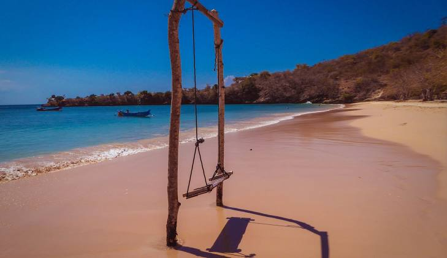
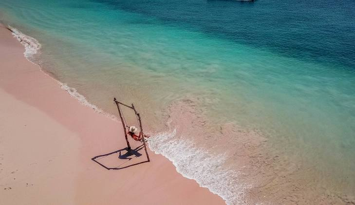
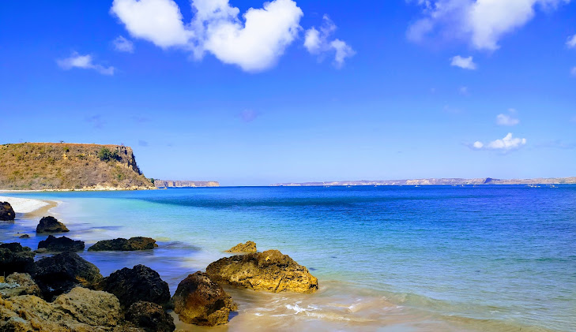

Keindahan yang Unik dan Menawan
Pink Beach adalah salah satu destinasi wisata ikonik di Labuan Bajo, Indonesia. Pasirnya yang berwarna merah muda terbentuk dari campuran pasir putih dan pecahan koral merah. Pantai ini dikelilingi oleh pemandangan alam yang memukau dan air laut yang jernih.
Aktivitas yang Bisa Dilakukan
- Snorkeling dan menyaksikan kehidupan bawah laut yang mempesona.
- Bersantai menikmati suasana pantai yang tenang.
- Fotografi dengan latar pantai berpasir merah muda yang unik.
Tips Berkunjung
- Gunakan sunscreen untuk melindungi kulit dari sinar matahari.
- Bawa kamera untuk mengabadikan momen indah.
- Jaga kebersihan pantai dengan tidak membuang sampah sembarangan.
Galeri Pink Beach


